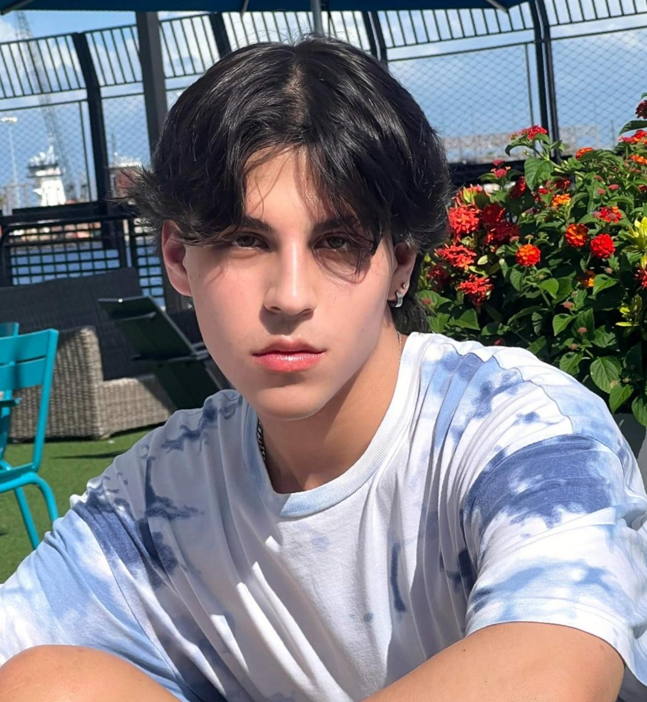

David González Idárraga
Nivel: Apasionado
Datos personales
Estudiante de pregrado
Universidad de Antioquia
Artes plásticas
19 Años
Actividades realizadas: 20
Descripción
Artista en formación, vegano, enamorado de los animales y la naturaleza. Interesado en el voluntariado animalista, social y ecológico.